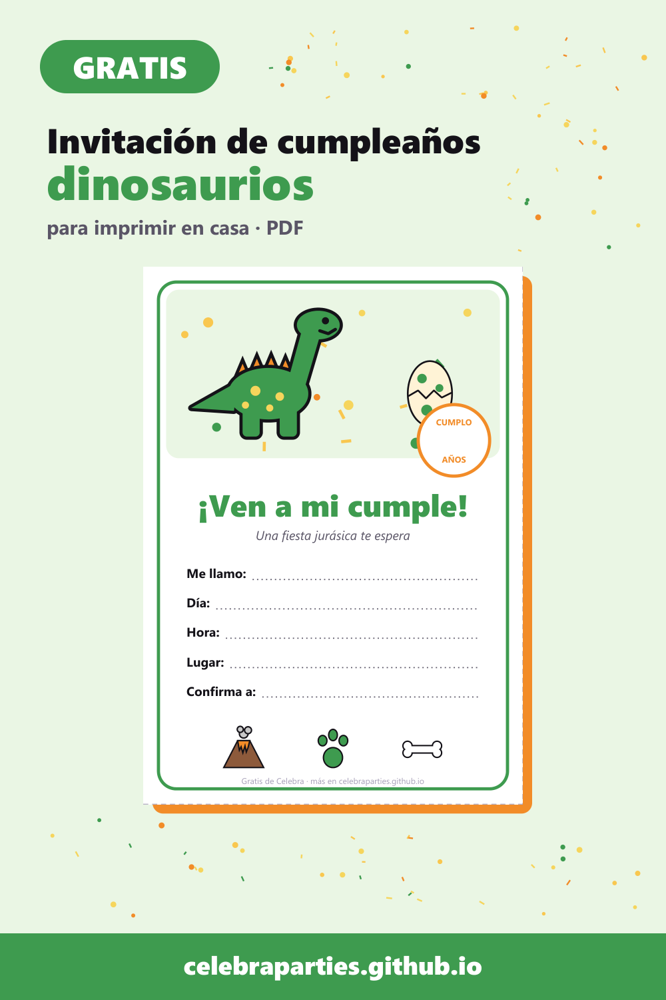
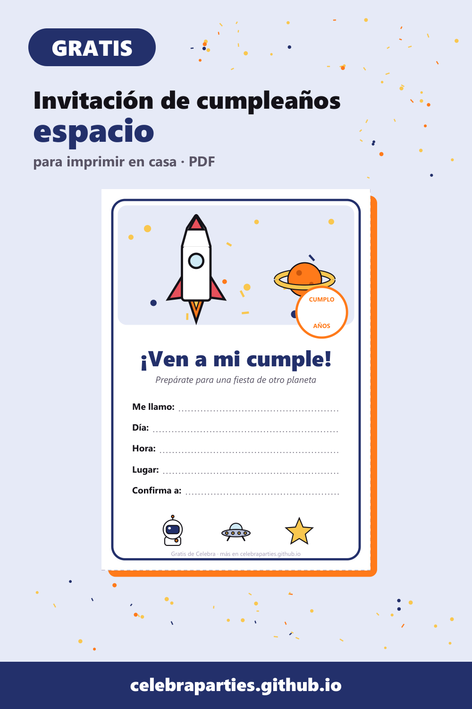
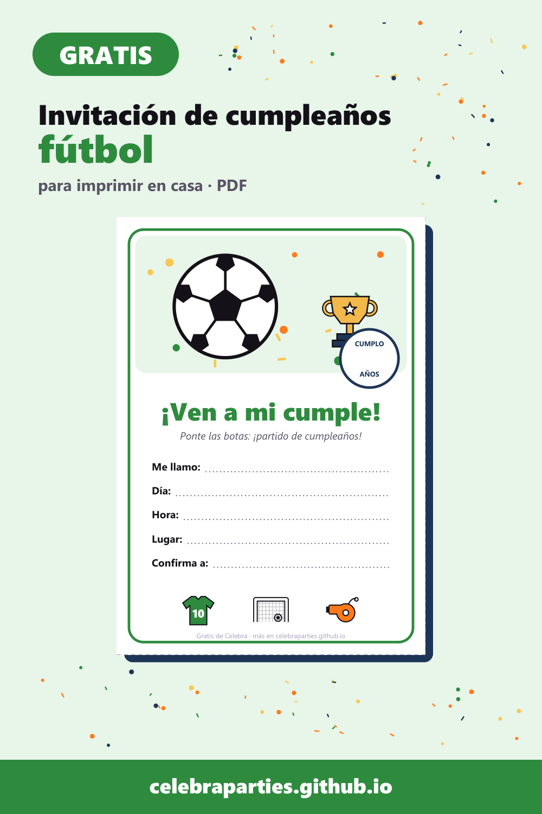
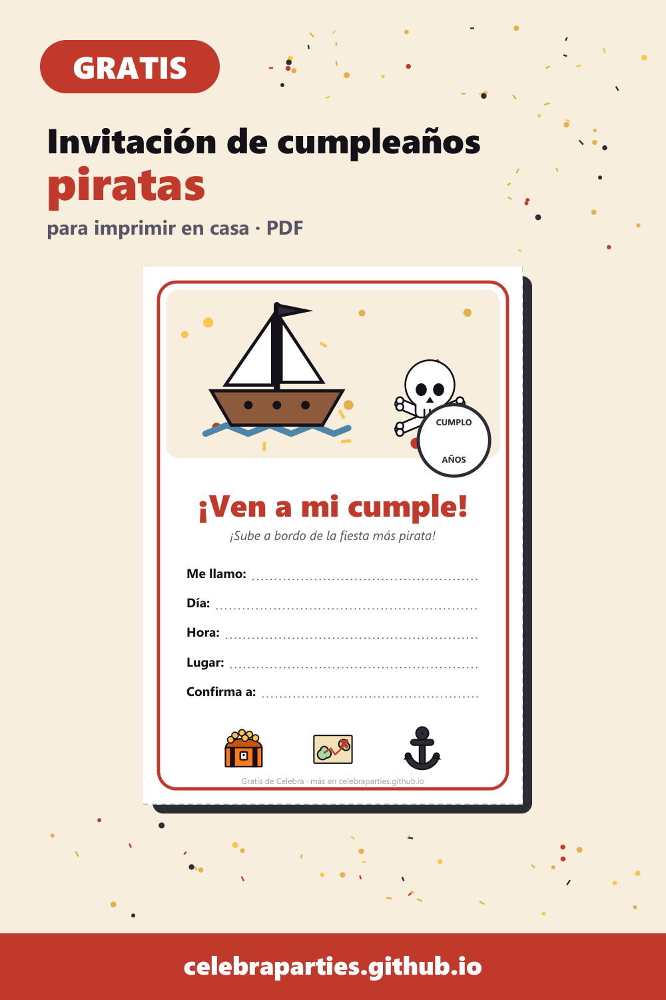
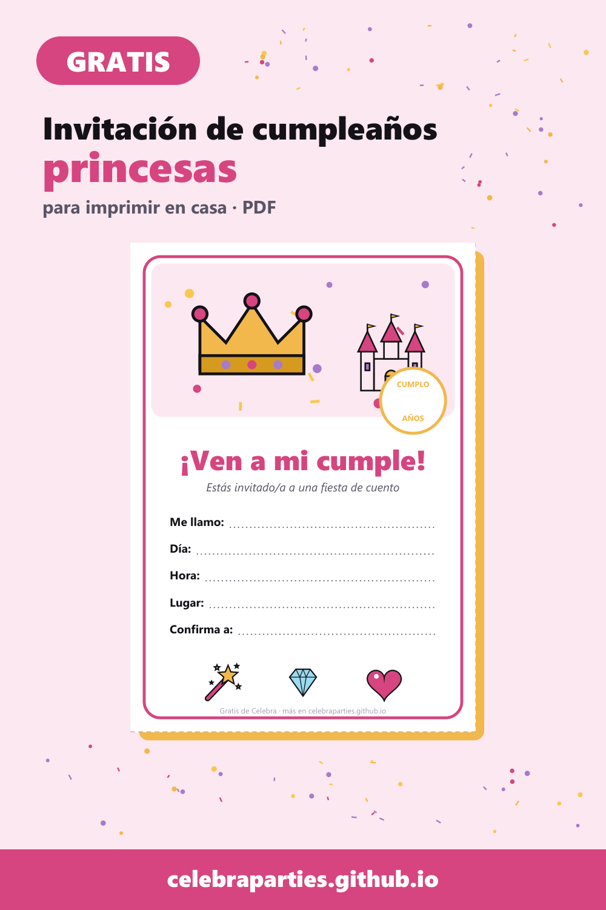
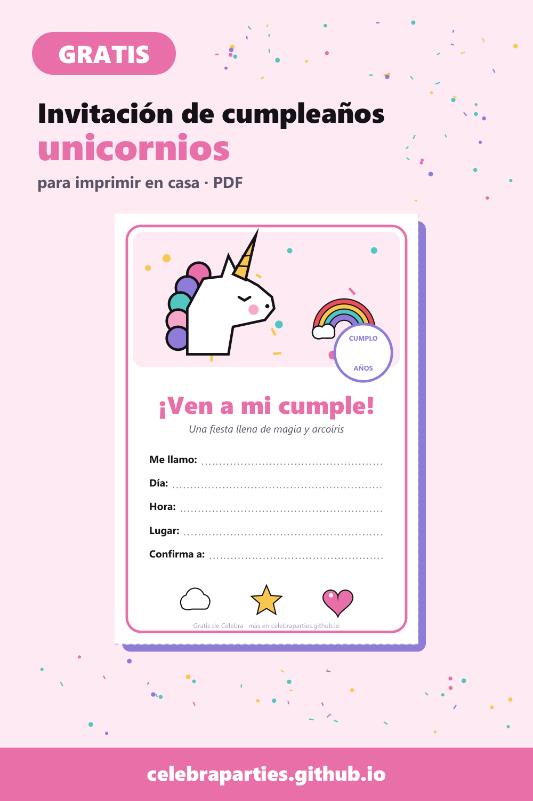
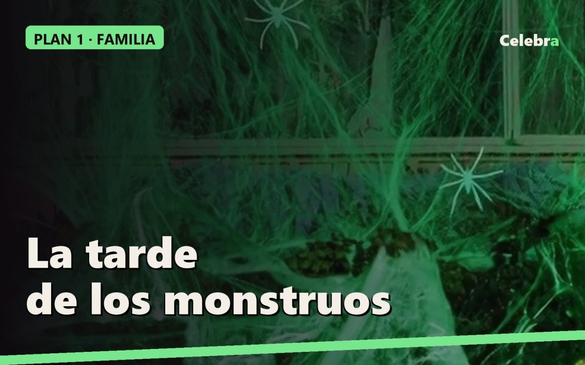
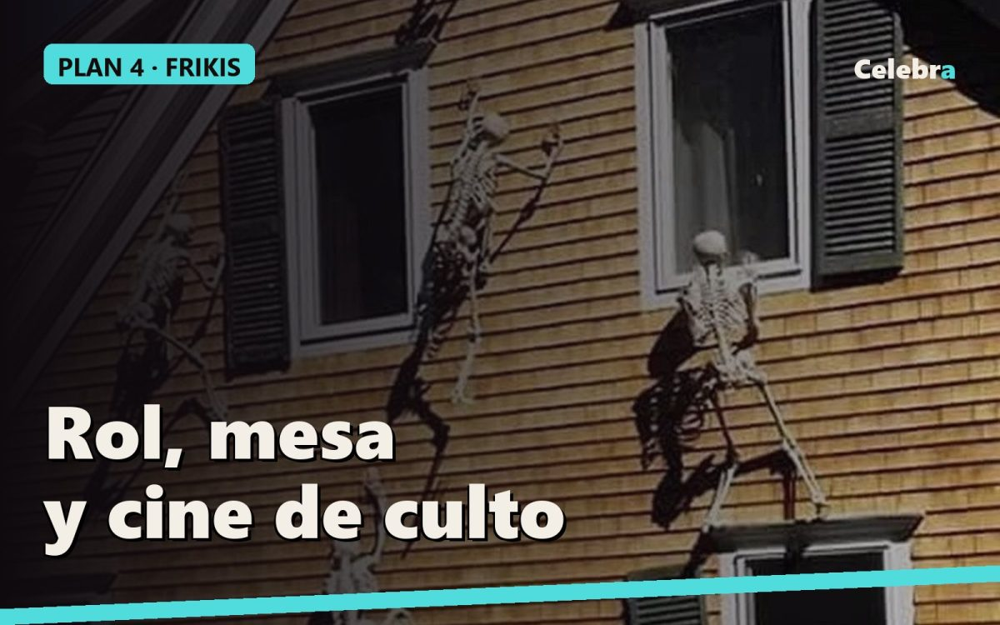
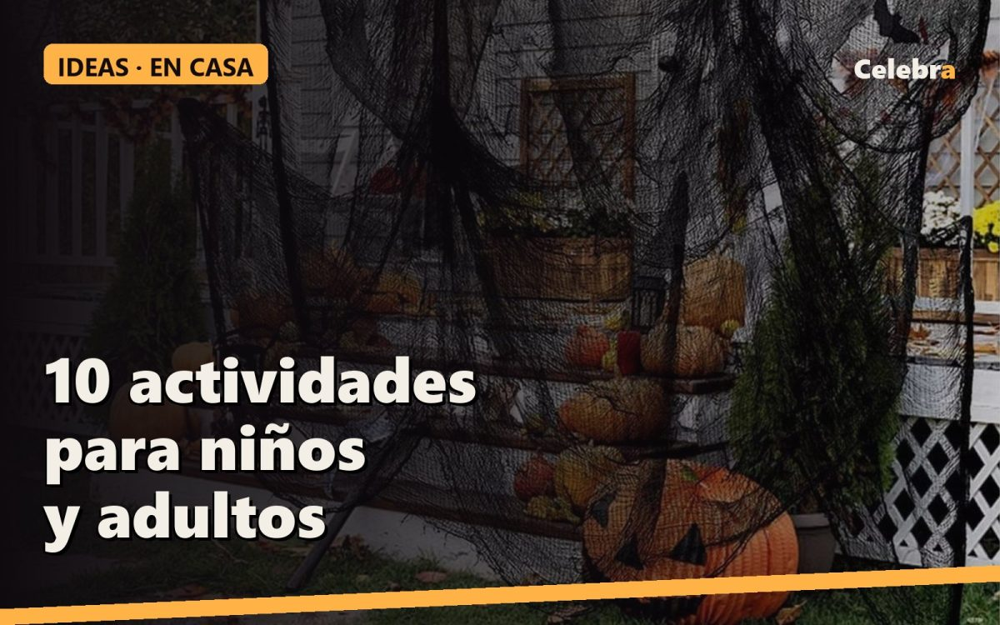

Ideas para tus fiestas
Guías cortas para montar la fiesta: qué ver, a qué jugar, cómo decorar, invitaciones gratis para imprimir y relatos de Halloween.

Invitación de cumpleaños de dinosaurios gratis para imprimir (y cómo montar la fiesta)
Descarga gratis 4 invitaciones de dinosaurios en PDF y copia nuestras ideas para un cumple jurásico en casa: decoración, juegos y merienda.

Invitación de cumpleaños del espacio gratis para imprimir (cohetes, planetas y astronautas)
Descarga gratis 4 invitaciones del espacio en PDF y organiza un cumple de otro planeta con estas ideas de decoración, juegos y merienda.

Invitación de cumpleaños de fútbol gratis para imprimir (y un partido de cumple)
Descarga gratis 4 invitaciones de fútbol en PDF e ideas para un cumple futbolero: decoración, juegos por equipos y merienda.

Invitación de cumpleaños pirata gratis para imprimir (con búsqueda del tesoro)
Descarga gratis 4 invitaciones piratas en PDF y monta un cumple al abordaje con mapa del tesoro, juegos y merienda.

Invitación de cumpleaños de princesas gratis para imprimir (y una fiesta de cuento)
Descarga gratis 4 invitaciones de princesas en PDF e ideas para un cumple de cuento: castillo, coronas, juegos y merienda.

Invitación de cumpleaños de unicornio gratis para imprimir (con ideas para la fiesta)
Descarga gratis 4 invitaciones de unicornio en PDF y monta un cumple mágico en casa con estas ideas de decoración, juegos y merienda.

Los 6 maquillajes de Halloween más típicos y cómo hacerlos en 15 minutos
Calavera, vampiro, zombi, bruja, gato y payaso. Con una imagen de ejemplo y un vídeo paso a paso de cada uno, qué necesitas de verdad y el truco para que se vea bien de noche.

Caperucita no llegó (relato de terror: la casa que ayer no estaba)
Una chica con capucha roja cruza el parque de noche hacia casa de su abuela. En el camino hay una casa con las ventanas tapadas de tela negra y una telaraña de luces moradas que ayer no estaba. La puerta está abierta. Relato completo y cómo montar esta escena en tu casa.

5 planes completos para Halloween 2026, según con quién lo pases
Cinco fiestas organizadas de principio a fin, cada una para un público: familia con niños, adolescentes, mayores de 18, frikis y cena elegante. Horario, decoración, disfraces, juegos, comida, música, película y lista de la compra.

El invitado del sofá (relato de terror: el esqueleto que cambiaba de sitio)
Un piso de estudiantes compra un esqueleto de broma para la fiesta. Cada mañana aparece en una pose distinta y nadie lo ha tocado. Relato completo y cómo montar esta escena en tu casa este Halloween.

Plan 3 · Halloween a los 18 (y hasta los 25): la prefiesta que se sale de madre
De 21:00 a 01:00 en casa y luego a la calle. Barra de cócteles malditos, juegos con prenda, disfraces que se reconocen en la cola de la discoteca y un susto final antes de salir.

Plan 2 · Halloween con adolescentes (de 13 a 17): la casa embrujada
De 19:00 a 00:00, sin alcohol y con sustos de verdad. Un pasaje del terror en el pasillo, retos, tres disfraces reconocibles y una maratón de miedo.

Plan 5 · Halloween con cena elegante (de 30 en adelante): la mansión y el crimen
De 20:30 a 01:00, de 6 a 12 personas. Una cena de tres platos con un asesinato por resolver, mesa de mansión, disfraces con clase y una película clásica de cierre.

Plan 1 · Halloween en familia (de 4 a 10 años): la tarde de los monstruos
De 17:00 a 21:30, en casa, con niños. Decoración que no asusta de más, tres disfraces fáciles, juegos, merienda-cena y película. Lista de la compra incluida.

Plan 4 · Halloween friki: la noche de rol, mesa y cine de culto
De 18:00 a 02:00, de 4 a 8 personas. Una partida de rol de terror de una sola noche, juegos de mesa de casa encantada, comida de taberna y las películas que solo los frikis ponen.

8 juegos para una fiesta de Halloween que nadie olvida
Juegos para grupos de seis a veinte personas, sin material raro y con al menos uno que acaba en gritos.

El médico que llamó a las 3:33 (relato de terror para leer con la luz apagada)
Un pueblo, la peste, y un médico con máscara de pico que llama a las puertas de madrugada. Nadie que abre vuelve a estar enfermo. Relato completo y cómo montar esta escena en tu casa este Halloween.
La música de Halloween: 25 canciones para la fiesta, de la entrada al susto final
La lista que ponemos nosotros, ordenada por momentos de la noche. Y qué poner cuando hay niños.

10 actividades de Halloween en casa, para niños y para adultos
Ideas que se montan en una tarde con lo que hay en casa y dos o tres piezas de decoración bien elegidas.
Las 12 películas para una noche de Halloween, de menos a más miedo
Una lista para elegir según quién esté en el sofá: con niños, en pareja o con los amigos que dicen que nada les asusta.